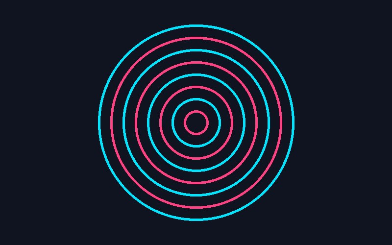
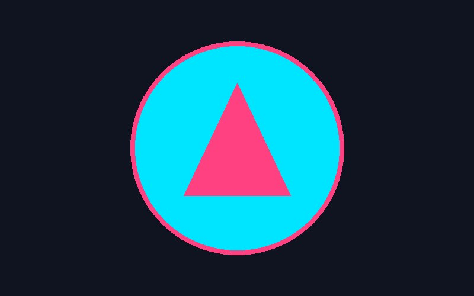
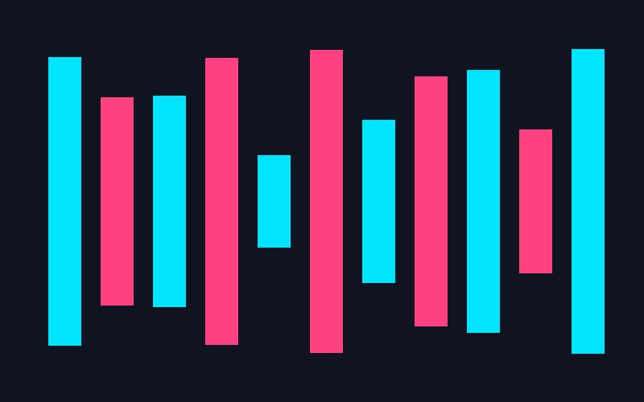

Identidad Visual Animada: Sanmar Production
Sistema gráfico modular y paquete de animación de logotipo diseñado para producciones audiovisuales independientes.
Herramientas: Adobe After Effects, Illustrator y Photoshop
SANMAR / PORTAFOLIO MULTIMEDIA
Motion Graphics 2D, Diseño Audiovisual e Interfaces Interactivas

Estudiante de Diseño Multimedia en la Universidad Politécnica Salesiana (Cuenca). Me apasiona dar vida a identidades visuales mediante animación 2D en After Effects, narrativa documental y programación web creativa.
Enfoque creativo: Me interesa desarrollar piezas de motion graphics, cortometrajes documentales, identidades corporativas animadas y experiencias web interactivas.

Sistema gráfico modular y paquete de animación de logotipo diseñado para producciones audiovisuales independientes.
Herramientas: Adobe After Effects, Illustrator y Photoshop

Composición gráfica reactiva sincronizada con frecuencias musicales para escenarios y eventos multimedia.
Herramientas: After Effects Expression Controls y Diseño Vectorial
La pista de audio ambiental (ambiente.wav) representa la atmósfera sonora minimalista que utilizo en mis introducciones audiovisuales, mientras que el video (presentacion.webm) muestra una prueba de movimiento orbital continuo aplicado a gráficos vectoriales.
Escucha una muestra de diseño sonoro ambiental creada para el portafolio:
Reproduce la pieza de animación geométrica de presentación:
MI LABORATORIO GENERATIVO
Una composición de formas geométricas inspirada en el ritmo y el diseño audiovisual. Presiona Generar para crear otra combinación de figuras y colores.
Elige colores, genera otro afiche o guárdalo.
Composición lista.
Cómo usar: selecciona una paleta, haz clic en Generar y, cuando te guste el resultado, presiona Guardar PNG.
Nota: Este formulario es estrictamente demostrativo para fines académicos. No almacena datos ni envía mensajes reales; utilice únicamente datos ficticios.